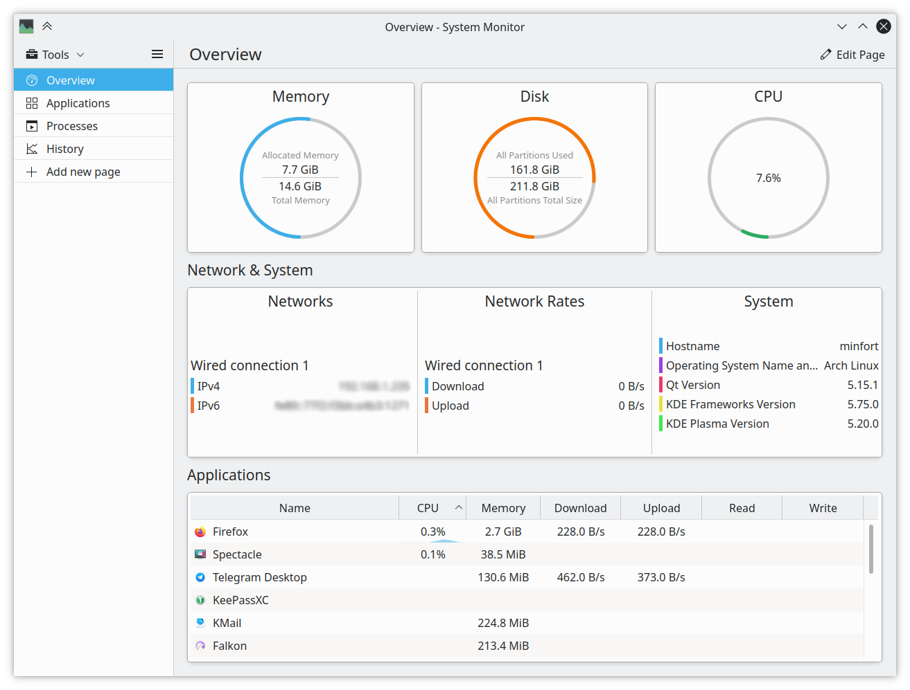

M1: 打印进程树 (pstree)
⏰ 截止日期
Soft Deadline: 2023 年 3 月 19 日 23:59:59。
你需要首先阅读实验须知，其中包含了代码获取方法、提交方法、如何查看提交结果等。
在命令行中
git pull origin M1下载框架代码。
⚠️ 学术诚信
正如课堂上所说，主动 “参考” 他人的代码、使用他人测试用例都是不严格要求自己的行为。为了使你变得更强，遵守学术诚信可以使你获得真正的训练。坚信计算机世界里没有玄学，无论是 C 代码、汇编代码还是处理器，都可以看作是严格的数学对象，可以使你在遇到问题时少一些焦躁，冷静下来分析下一步应该做什么。
具体到这个实验，你应当主动地避免阅读任何人 (包括互联网) 上打印进程树或进程列表的代码，但可以查看 API (如 readdir 等) 的使用方法和例程。遇到问题时尽量自己调试解决，但可以向他人请教调试的技巧，例如 “我遇到了 XX 现象”，但不知道下一步应该怎么做。
为了确保你对操作系统有真实的了解，
本课程禁止直接使用 AI 生成的代码和直接复制互联网上的代码。 你应当主动不要求 AI 写代码或从互联网上复制代码，但你可以询问 AI 或在互联网上搜索 API 的使用方法。
1. 背景
因为程序可以看成状态机，操作系统能 “同时运行多个程序” 的能力就是状态机管理的能力。自然，操作系统也应该提供 “监测状态机状态” 的功能，例如显示在一段时间内，各个程序 (进程、状态机) 的活跃程度。没错，这就是大家熟悉的任务管理器。下面的图片展示了 Plasma Desktop 的任务管理器，能够显示系统资源的使用情况和进程的信息。

我们只要能实现获取进程列表、进程占用 CPU 内存信息等，是不是我们也可以实现类似的功能呢？根据《操作系统》课程重要的基本原理合理的需求一定有合适的方法满足，操作系统一定会提供进程相关的对象和获取信息的 API。如果你是操作系统的设计者，你会提供怎样的 API (syscall)？
一个可行的想法是操作系统可以提供类似迭代器的 API，可以在某个时刻对进程列表进行 “快照”，然后程序可以通过 API 迭代快照里的进程。
Snapshot *CreateProcessSnapshot(); // 迭代开始
Process *FirstProcess(Snapshot *snapshot); // 取得第一个进程
Process *NextProcess(Process *process); // 获得下一个进程
int ReleaseProcessSnapshot(Snapshot *snapshot); // 迭代结束
高级语言可以进一步封装，例如借助 WMI (Windows Management Instrumentation) 库：
import wmi
for proc in wmi.WMI().Win32_Process():
...
UNIX 操作系统的设计者用另一种方法使应用程序能访问进程列表：操作系统会不断更新一个对象 (文本文件) 的内容，这样应用程序就能用文件 API (open, read, close) 来获取进程列表，例如大家可以用熟悉的 C 语言 FILE * 访问。例如，今天我们可以考虑一个名为 /system/processes.json 的文本，每当进程创建或退出，这个文件的内容就会更新：
[
{
"pid": 1,
"parent": -1,
"command": "/bin/init"
},
{
"pid": 2,
"parent": 1,
"command": "/bin/bash"
}
]
UNIX 采用了 Everything is a File 的设计。换句话说，我们可以把操作系统的状态变成文件系统的一部分，从而可以使用我们熟悉的 read, write 等 API 访问操作系统中的各类信息。在这个实验中，我们学习 UNIX/Linux 是如何把操作系统的状态放在文件系统中的。虽然这个实验里你只需要读取进程列表和进程之间的父子关系，但用类似的办法，也可以从 Linux 系统中读取出 CPU 占用率、内存使用等信息——于是你也可以实现自己的任务管理器了！
❓ 思考题
优点和缺点
Everything is a file 和提供 type-safe 的 API 都不是完美的。前者对人类用户来说更好用，例如可以用 UNIX 命令行工具任意解析而不需要写代码，但带来很多 “隐藏的规约”；后者把规约写在 API 里，可以在你犯错时更好地保护你，但 “上手” 也稍稍困难一些：Windows Kernel + GDI 的 Windows API 就在 1,000 个以上。
我们预见到大语言模型和程序合成 (“低代码”) 技术能够从根本上改变我们开发的方式，操作系统 API 会逐渐成为一种只有库函数使用的 “汇编语言”。
2. 实验描述
实验要求
实现
pstree打印进程之间的树状的父子关系Linux 系统中可以同时运行多个程序。运行的程序称为进程。除了所有进程的根之外，每个进程都有它唯一的父进程，你的任务就是把这棵树在命令行中输出。你可以自由选择展示树的方式 (例如使用缩进表示父子关系，这是最容易的)。
Linux 系统自带了 pstree 命令，进程树会以非常漂亮的格式排版 (每个进程的第一个孩子都与它处在同一行，之后的孩子保持相同的缩进)：
systemd─┬─accounts-daemon─┬─{gdbus}
│ └─{gmain}
├─acpid
├─agetty
├─atd
├─cron
├─dbus-daemon
├─dhclient
├─2*[iscsid]
├─lvmetad
├─lxcfs───10*[{lxcfs}]
├─mdadm
├─polkitd─┬─{gdbus}
│ └─{gmain}
├─rsyslogd─┬─{in:imklog}
│ ├─{in:imuxsock}
│ └─{rs:main Q:Reg}
...
Linux 的 psmisc 中 pstree 的实现大约有 1,300 行，支持多种命令行参数。这个实验里实现最简单的就行。大家可以先玩一下 Linux 的 pstree，使用 man 命令查看 pstree 支持的功能，并试一试。在这个实验中，我们需要实现它的简化版：
2.1 总览
2.2 描述
把系统中的进程按照父亲-孩子的树状结构打印到终端。
-p或--show-pids: 打印每个进程的进程号。-n或--numeric-sort: 按照pid的数值从小到大顺序输出一个进程的直接孩子。-V或--version: 打印版本信息。
你可以在命令行中观察系统的 pstree 的执行行为 (如执行 pstree -V、pstree --show-pids 等)。这些参数可能任意组合，但你不需要处理单字母参数合并的情况，例如 -np。
2.3 解释
上述实验要求描述是参照 man page 的格式写出的，其中有很多 UNIX 命令行工具遵守的共同约定 (UNIX 的资深用户对此了如指掌；但对给初学者，尤其是从出生以来就生活在 GUI 环境中而不是遇事就读手册的大家造成了很大的困扰)，例如 POSIX 对命令行参数有一定的约定，读完以后，你立即发现你对手册的理解增加了 (手册的格式竟然也是 POSIX 标准的一部分！)：
- 中括号扩起的参数是可选参数，
[]后的…代表参数的 0 次或多次重复。因此-p,-n,-V都是可选的参数。 - 同一个选项可以有不同的名字。在
pstree中，-p和--show-pids的含义是一样的。 - 若不另行说明，整数范围在 32 位有符号整数范围内；但如果数值和文件大小有关，则其合法的范围是是 0 到系统最大支持的文件大小。
此外，main 函数的返回值代表了命令执行的状态，其中 EXIT_SUCCESS 表示命令执行成功，EXIT_FAILURE 表示执行失败。对于 POSIX 来说，0 代表成功，非 0 代表失败：例如 diff 返回 1 表示比较的文件不同，返回 2 表示读取文件失败 (cmp 的行为也类似)。UNIX Shell 对返回值有额外的处理。这解释了为什么一些 OJ 会明确要求 main 函数返回值为 0，当返回非 0 时将被认为是 Runtime Error。
Specification
** Online Judge 对返回值的要求**
按照 UNIX 惯例，
main函数返回非 0 将在 Online Judge 中被判定为 Runtime Error。
如果不知道这些约定，使用 Linux/Unix 的时候就会举步维艰。Unix 世界有一套自己定义的 “游戏规则”。也难怪会有笑话：
Unix is user-friendly — it's just choosy about who its friends are.
当然，在渐渐熟悉游戏规则以后就会发现，这套设计在 1970 年代有限的计算机算力和使用者的负担之间达成了优雅的平衡——Shell 总是可以帮助你用最短的时间把 quick and dirty 的事情搞定：UNIX 哲学强调 Keep it simple, stupid 和 Everything is a file.
3. 正确性标准
你可以任意选择树的形态，以下输出都是合法的：
$ ./pstree-64
systemd─┬─accounts-daemon─┬─
│
...
$ ./pstree-64
systemd
|
+--accounts-daemon-
|
...
$ ./pstree-64
systemd
accounts-daemon
...
只要输出系统中的进程即可；此外，允许进程列表有轻微出入。细心的同学可能发现你第一个版本的 pstree 可能和系统输出不太一样。在线评测会容忍你输出的一些缺陷；此外，作为第一个实验，我们会手下留情，没有非常强劲的测试数据。但你仍然需要确保：
- 正确列出系统中的进程，并正确实现参数组合的行为；
- 编写可移植的代码。我们会同时测试 32-bit 和 64-bit 的版本。
提示
在 Hard Test 上 Wrong Answer？
试一试
pstree -V > /dev/null，你会发现输出并没有到/dev/null。我们希望你的行为和系统中的pstree -V基本一致：输出到正确的输出流、包含pstree的基本信息，但版本描述可以不同。
4. 实验指南：把大象装进冰箱
想自己尝试？
鼓励大家忽略下面的教程，自己动手搞定，遇到不明白的地方可以求助 Google (Bing, Stackoverflow, ...)。完成之后可以看一下实验指南，看自己的理解是否有可以改进的空间。
- “把大象放进冰箱总共分几步？” “三步，第一步把冰箱门打开；第二步把大象放进去，第三步把冰箱门带上。” — 赵本山、宋丹丹《钟点工》
如果你觉得打印进程树这个问题比较困难，我们也把问题分解一下：
- 得到命令行的参数，根据要求设置标志变量的数值；
- 得到系统中所有进程的编号 (每个进程都会有唯一的编号) 保存到列表里；
- 对列表里的每个编号，得到它的的父亲是谁；
- 在内存中把树建好，按命令行参数要求排序；
- 把树打印到终端上。
因为人的脑容量有限，通常解决问题的办法就是把比较复杂的问题分解成小问题，再把小问题继续分解下去。而在学校里所做的训练就是建立问题分解的思路和培养解决问题的能力。
4.1. 命令行参数
我们的框架中已经包含了以下代码，功能是输出为 main 函数传递的参数——把进程看作状态机，main 函数的参数是进程 “初始状态” 的一部分，它是由进程的创建者决定的，也就是你在终端中执行类似 “./a.out hello world” 时指定的。
#include <stdio.h>
#include <assert.h>
int main(int argc, char *argv[]) {
for (int i = 0; i < argc; i++) {
assert(argv[i]); // C 标准保证
printf("argv[%d] = %s\n", i, argv[i]);
}
assert(!argv[argc]); // C 标准保证
return 0;
}
首先，尝试编译运行这个程序，并且这个程序传入不同，并且观察程序的输出。你会确认 argv[0], ..., argv[argc-1] 就是所有命令行的参数，这是操作系统与 C 程序之间的约定。getopt (man 3 getopt) 库可以处理命令行参数；当然，你也可以直接自己动手解析。
4.2. 开始做实验
之后会反复编译运行这个程序，所以编译和测试自动化非常重要。比较常见的项目组织是编写 Makefile，在命令行中使用 make 实现编译，make test 完成测试。我们已经为大家提供了 Makefile，欢迎大家仔细阅读。IDE 和编辑器 (例如 vscode) 都支持运行和调试的配置。我们强烈建议同学们在你们熟悉的编程环境中完成编译运行的配置，以最大化你的编程效率。
提示
回想一下大家做 OJ 题的过程。在编程的过程中，难免会经历修改代码 $\to$ 编译 $\to$ 运行 $\to$ 修改代码……这样的循环。你会选择怎么做呢？新手每次都键入命令 (或者他发现 Ctrl-p 可以重复命令)。
- 之后，有同学人发现，可以把命令写在一行里，比如
gcc a.c && ./a.out，一键就能编译运行了。- 再之后会发现可以写个 Makefile (就像这个实验一样)，用
make test跑完所有测试。- 再之后会发现可以每次在文件改动以后自动运行所有测试……有个神奇的命令叫
inotifywait。即便现在有 IDE 和丰富的插件，UNIX 哲学依然是无处不在的 (甚至是这些 IDE 的组成基础)，说得更具体一点，“只要你敢想，就一定能做到”。祝大家编程愉快。
最后，以下两点有助于调试时放平心态：(1) 机器永远是对的；(2) 未测代码永远是错的。
4.3. 得到系统中进程的编号
进程是操作系统中的对象，因此操作系统一定提供了 API 访问它们。已经剧透过，系统里的每个进程都有唯一的编号，它在 C 语言中的类型是 pid_t。不知道这是什么？Google 一把就知道啦。你能找到 glibc 对它的官方文档解释。以后遇到问题要自己找答案哦！
操作系统以什么样的方式让你获取系统里的进程呢？之前也提示过：
Everything is a file.
一切皆文件，进程信息当然也可以是 “一切” 的一部分。Linux 提供了 procfs，目录是 /proc。如果你进去看一眼，就会发现除了一些比如 cpuinfo 这样的文件，还有很多以数字命名的目录——聪明的你也许已经猜到了，每个目录的名字就是进程号，目录里存储了进程相关的运行时数据。
我们鼓励大家先玩一玩 procfs，里面可有很多有趣的东西！你可以用 cat 可以打印文件的内容，对照文档 (或者 ChatGPT)，你会发现原来我们以为离我们很遥远的 “观测进程执行”，简单得只要解析文本文件就可以了！例如，每个进程的父进程也隐藏在 /proc/[pid]/ 中的某个文件里。试试 man 5 proc，里面有详细的文档。很多 Online Judge 都使用 procfs 读取进程的运行时间/内存数据。
4.3. 遍历所有进程
了解了 procfs 之后，我们的问题就变得简单一些了：只要能得到 /proc 目录下的所有以数字为开头的目录，我们就遍历了系统中的进程。因此你会去互联网上搜索如何用 C 语言遍历目录。之后，你可以用你熟悉的方式打开 procfs 里的文件：
FILE *fp = fopen(filename, "r");
if (fp) {
// 用fscanf, fgets等函数读取
fclose(fp);
} else {
// 错误处理
}
procfs 里的信息足够让你写一个非常不错的任务管理器。那么，“真正” 的任务管理器，例如 ps 命令，是否也是基于 procfs 实现的呢？这就是一个典型的 “好问题”：他帮助你建立你的实验作业和真实系统之间的联系。操作系统课程也给了大家足够的工具，使得同学们可以把任务管理器打开，查看它调用的操作系统 API。我们在课堂上已经演示过 gcc 和 xedit 的例子，就用 strace 工具就能查看进程运行时的系统调用序列：
$ strace ps
...
openat(AT_FDCWD, "/proc/1/stat", O_RDONLY) = 6
read(6, "1 (systemd) S 0 1 1 0 -1 4194560"..., 1024) = 190
close(6) = 0
...
4.4. 建树和打印
这是算法/数据结构课程的内容，也是经典的编程面试题之一——互联网公司很可能会用类似的题目来考察面试者的基本能力。如果你没有头绪，试着定义一个递归函数 $f(T) = [s_1,s_2,\ldots,s_n]$ 把 $T$ 打印成多行文本 (第 $i$ 行是字符串 $s_i$)。
- 对于叶子节点，直接输出一个格式化字符串 (例如使用
asprintf)； - 如果不是叶子节点，对它所有子树 $T_1, T_2, \ldots T_k$ 分别求 $f_i(T_i)$，得到 $k$ 个多行的文本；
- 把这些字符串拼到适当的位置，加上一些连接线：
(root)─+─T1(line 1)
| T1(line 2)
| T1(line 3)
+─T2(1)
|
...
然后你会发现你并不需要真的实现 $f(T)$，而是一遍递归一边打印就行。
4.5. 写出正确的代码
完成了？
是时候问问自己：我的程序对吗？
虽然在这个实验里，我们的测试用例相对简单；但在未来的实验中，Online Judge 可能会在各种奇葩的条件下运行你的程序哦！除了你们做的 OJ 题中会有复杂的逻辑 (参数的组合) 导致 bug 之外，和系统打交道的编程可有更多的麻烦之处：
- 你的程序遵守 POSIX 的返回值规定吗？如果你的 main 函数返回了非 0 的数值，我们将认为程序报告了错误——在非法的输入上返回 0，以及在合法的输入上返回非 0 都将导致 Wrong Answer。
- 程序够 roubust 吗？它会不会在一些非法的输入上 crash？如果系统里的进程很多呢？如果内存不够了呢？如果
open或者malloc失败了呢？要知道，crash 一般是因为 undefined behavior (UB) 导致的——UB 没把所有的文件都删掉真是谢天谢地了。 - 万一我得到进程号以后，进去发现文件没了 (进程终止了)，怎么办？会不会有这种情况？万一有我的程序会不会 crash……？
- 进程的信息一直在变，文件的内容也一直在变 (两次
cat的结果不同)。那我会不会读到不一致的信息(前一半是旧信息、新一半是新信息)？这两个问题都是 race condition 导致的；我们将会在并发部分回到这个话题。 - 如果我不确信这些事会不会发生，我有没有写一个程序，至少在压力环境下测试一下它们有没有可能发生？嗯，如果我同时运行很多程序，每个程序都不断扫描目录、读取文件，也观察不到这个问题，至少应该可以放点心。
随着课程的深入，这些问题都会得到解答。
当你的程序越来越复杂，这些问题也许将会成为你挥之不去的阴影。这就对了——从 Intel 的 CPU 到 Linux Kernel 都有数不清的 bug。你也许听说过 “形式化验证”，但事实也证明，经过验证正确的编译器 (CertComp) 和操作系统 (seL4, FSCQ, ...) 都依然存在 bug，尽管它们的可靠性依然比程序员手写的高得多。
写出正确的代码远比想象中困难——目前地球上还没人能保证复杂的系统没有 bug 和漏洞。我个人热切盼望着没有 bug 的那一天的到来，不过似乎遥不可及。不过也不用太绝望，这门课里会教给大家一些有关 “写代码” 的知识，更重要的是正确的思维方式 (“世界观”)：操作系统会提供什么、该提供什么、不该提供什么、应该怎么提供。